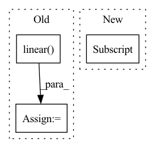

Pattern ID :2995
Before Change
output_a = self.model_a(**a)[1] // [bs, seq_len, 768]
output_b = self.model_b(**b)[1]
output = torch.cat([output_a, output_b, output_a - output_b], dim=1)
logits = self.linear( output)
loss = self.loss_fct(logits, labels)
return loss, logits
After Change
b.pop("labels")
output_a = self.model_a(**a)
output_b = self.model_b(**b)
embeddings_a = mean_pooling(output_a, a["attention_mask"] )
embeddings_b = mean_pooling(output_b, b["attention_mask"])
output = torch.cat([embeddings_a, embeddings_b, embeddings_a-embeddings_b], dim=1)
logits = self.classifier(output)In pattern: SUPERPATTERN
Frequency: 6
Non-data size: 3
Instances Fragment ID: 16349753
Project Name: prajjwal1/fluence
Commit Name: 34419f2135db008008674abe97e4d58df7050376
Time: 2020-09-22
Author: prajjwalin@protonmail.com
File Name: fluence/models/siamese_model.py
M Class Name: SiameseTransformer
N Class Name: SiameseTransformer
M Method Name: forward(3)
N Method Name: forward(3)
M Parent Class: nn.Module
N Parent Class: nn.Module
M File Name: fluence/models/siamese_model.py
N File Name: fluence/models/siamese_model.py
M Start Line: 25
M End Line: 32
N Start Line: 25
N End Line: 33
Before Change
memory, encoder_self_attns = self.encoder(inputs, inputs_mask)
output, decoder_self_attns, decoder_encoder_attns = self.decoder(targets, memory, targets_mask, memory_mask)
output = self.linear( output)
return output, encoder_self_attns, decoder_self_attns, decoder_encoder_attns
After Change
targets: Optional[Tensor],
return_attns: bool = False) -> Tuple[Tensor, Tensor, Tensor, Tensor]:
batch_size = targets.size(0)
targets = targets[targets != self.eos_id] .view(batch_size, -1)
memory, encoder_self_attns = self.encoder(inputs, input_lengths)
output, decoder_self_attns, memory_attns = self.decoder(targets, input_lengths, memory) Fragment ID: 16349754
Project Name: sooftware/transformer-pytorch
Commit Name: a0b53d9802b580df564793d1f66e65e286065f00
Time: 2020-07-25
Author: sh951011@gmail.com
File Name: transformer/models/transformer.py
M Class Name: Transformer
N Class Name: Transformer
M Method Name: forward(5)
N Method Name: forward(3)
M Parent Class: nn.Module
N Parent Class: nn.Module
M File Name: transformer/models/transformer.py
N File Name: transformer/models/transformer.py
M Start Line: 74
M End Line: 84
N Start Line: 60
N End Line: 73
Before Change
seq_dim = -3
index = torch.tensor([0], device=m.device)
s = self.linear( torch.index_select(m, dim=seq_dim, index=index))
s = s.squeeze(seq_dim)
return m, z, s
After Change
blocks_per_ckpt=self.blocks_per_ckpt if self.training else None,
)
s = self.linear(m[..., 0, :, :] )
return m, z, s
Fragment ID: 16349756
Project Name: aqlaboratory/openfold
Commit Name: a8601529127ff19fc50fee55e8ac810ebe712c82
Time: 2022-02-03
Author: gahdritz@gmail.com
File Name: openfold/model/evoformer.py
M Class Name: EvoformerStack
N Class Name: EvoformerStack
M Method Name: forward(7)
N Method Name: forward(7)
M Parent Class: nn.Module
N Parent Class: nn.Module
M File Name: openfold/model/evoformer.py
N File Name: openfold/model/evoformer.py
M Start Line: 524
M End Line: 527
N Start Line: 524
N End Line: 524
Before Change
def forward(self, input, label):
// --------------------------- cos(theta) & phi(theta) ---------------------------
cosine = F.linear( F.normalize(input), F.normalize(self.weight))
sine = torch.sqrt(1.0 - torch.pow(cosine, 2))
phi = cosine * self.cos_m - sine * self.sin_m
if self.easy_margin:
phi = torch.where(cosine > 0, phi, cosine)
else:
phi = torch.where(cosine > self.th, phi, cosine - self.mm)
// --------------------------- convert label to one-hot ---------------------------
// one_hot = torch.zeros(cosine.size(), requires_grad=True, device="cuda")
one_hot = torch.zeros(cosine.size(), device = "cuda")
one_hot.scatter_(1, label.view(-1, 1).long(), 1)
// -------------torch.where(out_i = {x_i if condition_i else y_i) -------------
output = (one_hot * phi) + ((1.0 - one_hot) * cosine) // you can use torch.where if your torch.__version__ is 0.4
output *= self.s
return outputAfter Change
cos_theta = cos_theta.clamp(-1, 1) // for numerical stability
with torch.no_grad():
origin_cos = cos_theta.clone()
target_logit = cos_theta[torch.arange(0, embbedings.size(0)), label] .view(-1, 1)
sin_theta = torch.sqrt(1.0 - torch.pow(target_logit, 2))
cos_theta_m = target_logit * self.cos_m - sin_theta * self.sin_m //cos(target+margin) Fragment ID: 16349745
Project Name: cavalleria/cavaface
Commit Name: 3b84e7dee20887685ce3f9d7a63cb74db35147c3
Time: 2020-04-28
Author: 605370459@qq.com
File Name: head/metrics.py
M Class Name: ArcFace
N Class Name: ArcFace
M Method Name: forward(3)
N Method Name: forward(3)
M Parent Class: nn.Module
N Parent Class: nn.Module
M File Name: head/metrics.py
N File Name: head/metrics.py
M Start Line: 75
M End Line: 88
N Start Line: 80
N End Line: 96